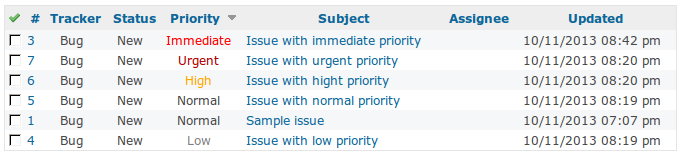
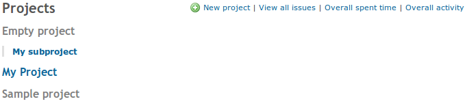

Theme extends default Redmine default theme (which is very clean and simple) and brings some useful features.
Features & Screenshots
- Colorful priorities on issues list 
- Bold subproject names on project listing
- Make "not my" prjects grey on project list to make you more focused 
- Clean and commented code to simplify personification
Other Proressive plugins for Redmine
- Progressive Projects List - overall projects status on one page.
- Progressive Redmine Theme - extends default theme with some nice features.
- Progressive Gantt Mods - assignee column and some preferences for Gantt chart.